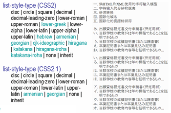
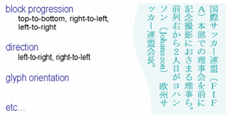
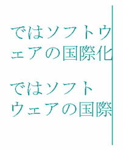
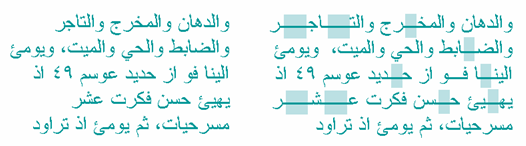
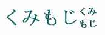
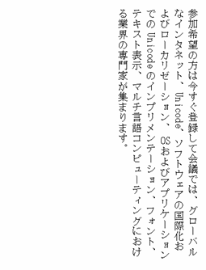
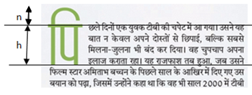
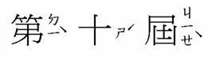

Intended audience:
HTML and CSS content authors who want to get a general idea of what lies in the future with regard to CSS support for non-Latin text support. The article assumes a basic understanding of CSS.
The CSS modules currently in development will introduce a significant number of properties designed to support non-Latin text, from vertical
script support to hyphenation, from ruby positioning to list numbering. This article will give you a glimpse of just some of the properties that
lie in store.
The article will not expose you to all of the properties planned for inclusion in CSS for the support of international text. It will
give you a flavor of what is to come, so that you can see the potential benefits of completing the work.
None of the specifications we will discuss here are finalized. Hopefully the article will raise your expectations and motivate you, where appropriate, to become involved in bringing these modules to a
final state and getting them implemented by user agents.
The way items are numbered in a list or in chapter headings, and so on, varies from script to script, and from language to language within the same script. In CSS2 only nine non-Latin counter styles were specified and, furthermore, the expected behaviour was poorly specified for these options.
list-style-type values in CSS 2 and CSS 2.1

CSS Counter Styles Level 3 specifies a way of defining your own counter styles, which makes it possible for content authors to apply almost any language-specific style they want.
The Internationalization Working Group maintains an associated document called Custom Counter Styles, which provides ready-made definitions of counter styles using the mechanism in the CSS Counter Styles spec. At the time of writing, the document contains definitions for over 120 counter styles in around 30 different scripts. These definitions are provided so that content authors have access to off-the-shelf code rather than having to figure out how to define common counter styles for themselves. The Working Group expects to add to the list as time goes by. (Many of these definitions are also specified in the CSS Counter Styles spec, since they were implemented by browsers.)
CSS Writing Modes Level 3 will enable you to use vertical text, and to mix horizontal and vertical text within the same page.
Key parameters here are the block-progression direction, the inline text direction, and the glyph orientation.
Text direction properties.

The block-progression direction allows you to specify the direction in which lines of text flow. Top to bottom would be appropriate
for horizontal text, since the lines are stacked top to bottom. Right-to-left would be the normal setting for vertical Chinese, Japanese and Korean,
where lines progress from the right to the left of the page or block. Left-to-right would be appropriate for a script like Mongolian, which is also
vertical but where your eyes start reading from top-left position.
Within a given line it must be possible to specify the inline directionality of text. Right-to-left would be appropriate for scripts
such as Arabic and Hebrew. This needs to be interpreted relative to the direction of the block progression.
It is then necessary to provide a means to control whether the Latin letters in vertical Japanese appear on their side (like
'Johansson' on the picture), or upright (like 'FIFA' on the picture), and whether text (left-to-right and right-to-left) runs up the vertical line or
down.
In some cases, you will want short horizontal runs of text inside the vertical lines, especially for short numbers. This is often referred to as tate-chu-yoko.
The internationalization test suite has tests and results for major browsers for vertical text support as well as bidirectional text support.
When lines of text wrap, the type of script affects the expected behavior – particularly with regard to the treatment of white space
around line breaks in the code.
Chinese and Japanese scripts do not delimit words with spaces, and wrap on a character-by-character basis. There are, however, some
rules (called kinsoku rules in Japan) that forbid certain characters (mostly final punctuation) from appearing at the
beginning of a line, and others that forbid certain characters appearing at the end of a line.
Thai script uses spaces to delimit phrases, rather than words, and typically does not use sentence final punctuation. There is,
however, a strong concept of a word, and text should be wrapped at word boundaries. Some Thai systems rely on users adding zero-width spaces to
indicate where wrapping is appropriate, but it is more common to use a dictionary to determine word boundaries.
The line breaking properties in CSS Text Module Level 3 will allow you to indicate appropriate behavior for scripts like Chinese, Japanese and Thai,
where adding a space between wrapped text may not be appropriate.
Some of the CSS properties will allow you to specify whether or not to wrap differently in the middle of embedded text from another
script. For example, if you have Latin text in the middle of Chinese, should it wrap character by character or word by word? Both are valid, and CSS
should allow you to choose according to your general preferences or the context. (See the two examples in the figure below.)
Line breaking possibilities with mixed CJK and Latin text.
In addition, it is also important to allow the user to express preferences relating to the kinsoku rules and their Chinese and Korean
equivalents. The top example in the figure below shows a typical result when the last character on a line is followed by a small katakana
character.
Small kana and line breaks.

The small katakana character begins the second line. This tends to be the preference in modern Japanese typography, and is
particularly useful in text with thin columns. The second example shows the result of a different approach, often referred to as 'strict'. The line
wrapping algorithm now pulls down the last katakana character from the previous line so that the small katakana character is no longer in
line-initial position, leaving a gap at the end of the line if the text is not justified.
One way of applying the end-of-line kinsoku rules just mentioned is to wrap two characters down to the next line. This may be done,
for example, to avoid a sentence final delimiter appearing at the start of a line. An alternative is to leave the punctuation hanging out of the margin. CSS should allow you to control this.
When specifying alignment and justification of text, CSS needs to allow you to specify how justification is to be applied to mixed
script text. The example below shows how one approach can cause inter-character spacing to be applied to ideographic characters but not Latin
text.
Properties to control justification will also allow appropriate types of justification for various different scripts, for example
ideographic, indic scripts with baseline connectors, South-East Asian scripts that don't use spaces between words, cursive scripts like Arabic,
etc.
Chinese text as normal and with inter-ideograph justification.
Arabic script text may justify by such devices as stretching the connected baselines of letters within a word, by using wider glyphs, by stragetic use of ligation, and by stretching the
spaces between and sometimes inside the words. CSS should provide properties to help you manage these justification alternatives, but at the time of writing we also need a better understanding of the principles involved before that can happen.
A very simplistic, and somewhat unattractive, approach to justification in Arabic which nevertheless shows elongation of the joins between characters.

As part of the process of justifying CJK text, you may want to specify whether, and if so how, blank space compression behaves. The picture
below shows an example of a full-width parenthesis in Japanese that has its blank space removed to allow for compression.
Trimming during text justification.
You should also be able to specify whether a full-width punctuation mark in ideographic text should be narrowed at the beginning of a
line so that its 'ink' lines up with the first glyph in the lines above and below. This makes the left margin or top margin look neater, but also
affects the justification of the line on which it occurs.
When non-ideographic text or numbers appear in ideographic text it is often preferable to separate the two with a little additional
space. CSS could provide a property that allows you to add such spacing without the need for spaces in the content. You could apply it around a number
of different types of embedded text, and combine them as you wish. This is currently waiting for work to progress on a future version of the Text module.
Text autospace set to normal, then set numeric plus alpha.
Some scripts have typographic features that are special. It should eventually be possible to support these features using CSS. For example, Japanese has kumimoji and warichu forms.
Kumimoji is a Japanese word referring to the practice of combining up to 5 glyphs within a single
wide-character glyph space.
Kumimoji.

Warichu is a Japanese word for a type of inline note, where the text runs on two lines.
Warichu.
Since, in both cases, the underlying text is a normal sequence of characters, and the arrangement is simply a typographic effect, both of these effects could be made available through CSS properties at some future time.
It is common for the glyphs in documents written in East Asian languages to be laid out on a page in a grid pattern. This approach is
helped by that fact that ideographic, kana and hangul characters tend to be the same width.
CSS could specify a set of properties for applying grids and for managing non-full width characters inside the grid, such as Latin
text, in various ways. Such properties would indicate whether the grid should apply to non-ideographic characters in the same way as to CJK
characters.
This picture shows some vertical Japanese text with no grid applied.
Japanese text with no grid applied.

On this next picture we see the effect of applying one type of grid layout to the previous text.
CSS Text Decoration Module Level 3 will allow native forms of emphasis, such as the boten marks used in Japanese.
These are similar in use to italicisation or bolding in Latin text – neither of which work well in small font sizes for on-screen ideographic
text.
Japanese boten marks
Various properties are needed to specify the type of boten character to be used, and the position relative to the base text (ie. top or
bottom for horizontal text, and left or right for vertical).
Other scripts have additional ways of expressing emphasis, footnotes, and the like that will need some support with CSS properties in the future.
Tests CSS Pseudo-Elements Module Level 4 looks at how to identify and style characters at the start of a line in ways that ressemble drop caps and similar special formatting.
Initial-letter styling in an Indic script.

The rules will need to be adapted to handle differences across the various scripts that content authors use. For example, initial-letter highlighting in Indic scripts often requires selecting a group of characters, and alignment may need to take into account different parameters from those in the Latin script. Information is still being sought to determine the implications of this feature for the various scripts around the world.
Ruby is a type of annotation associated with a base text that is often used in Japanese, and to some extent
in Chinese also, to provide pronunciation information for ideographs, and sometimes short explanations. The name 'ruby' originated from a named font
size (about half the size of the normal 10 point font) used by British typesetters.
Sometimes you may want to be able to control the location of ruby text. CSS Ruby Layout Module Level 1 provides a property that gives you control over
the location.
Ruby displayed above/on right.
Ruby displayed below/on left.
Another value is provided to indicate that the browser should treat bopomofo annotations in Traditional Chinese text so that the ruby appears in a
column to the right of each ideographic character, whether the text is horizontal or vertical.
Ruby-position: right

Properties are also needed to indicate the relative alignment of ruby and base text when one is longer than the other. The picture below shows how text would look if the shorter line were aligned with the end of the longer.
(Ignore the green line, which is there just to show the boundaries more clearly.)
Ruby-align: end
If the ruby text is wider than the base text you should be able to specify whether or not it overhangs any surrounding base text, and to what
amount, using a property for ruby overhang.
Note how, in the following example, the ruby text overlaps the preceding characters, but not the following base text. Note also that ruby does not
overlap itself. Properties are needed to manage fine positioning of this kind.
If you are interested in seeing these features become available, please let the W3C know. It is always useful to us to hear what users
want. There are also a number of practical ways to get involved.
The CSS Working Group has a lot of work on its hands, and your assistance in developing these
specifications will be appreciated.
You can help move the specifications forward by reviewing and commenting on the public drafts that are made available. If you have
expertise in this area, you might also consider participating in the CSS or Internationalization Working Groups to help move the work along.
Even when we move these specifications to Recommendation stage, the battle is not yet won. User agent developers must implement these
features so that we can use them, and we need the properties to be widely implemented on a range of user agents. Again, the voice of local users is
important in making that happen. User agent developers are unlikely to implement these features if they hear no-one asking for them. You should ensure that you raise issues, bugs and requirements related to improved support for scripts and languages with browser developers.
Finally, you can help by keeping informed about progress on these features and implementing them in your content when they become
available.